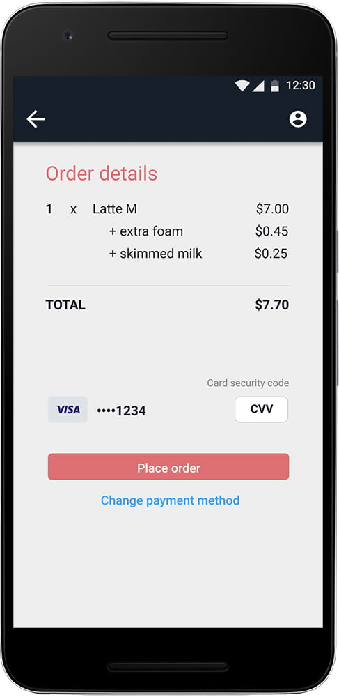
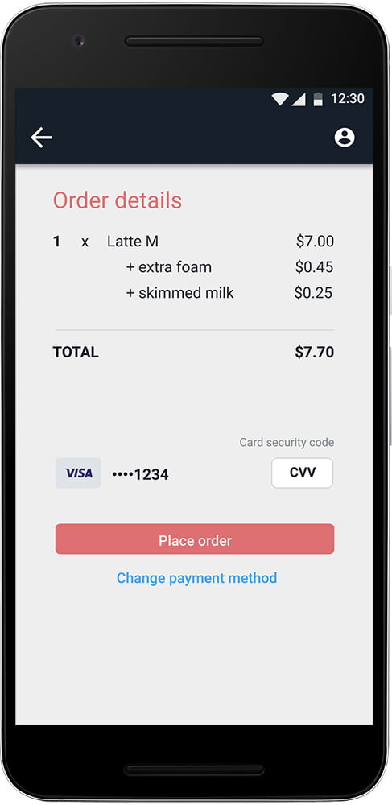
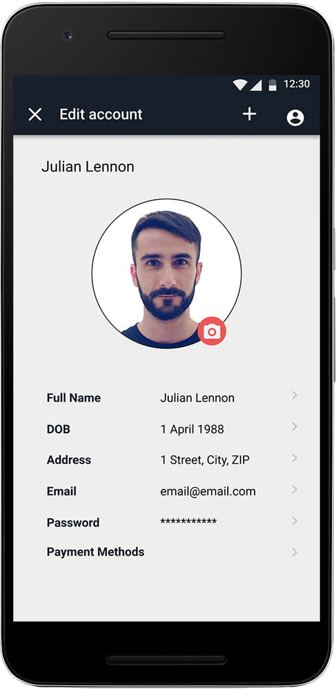
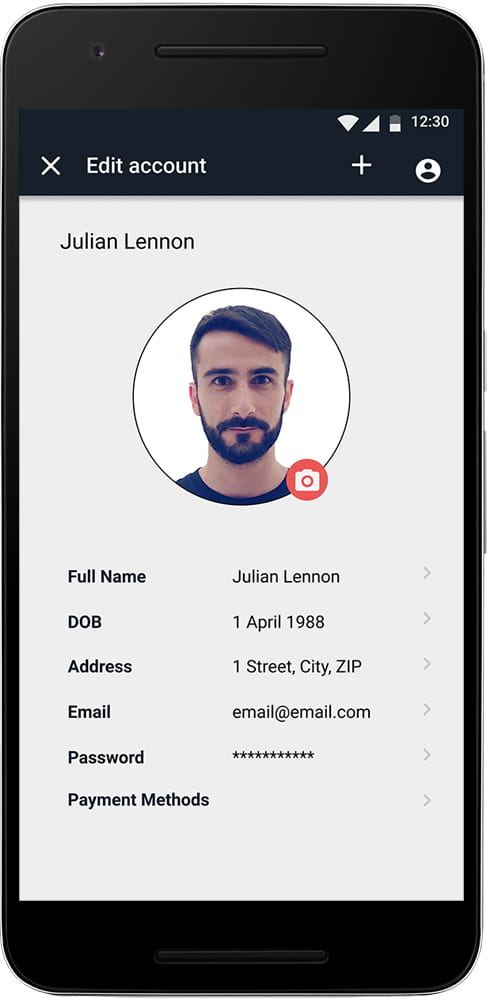
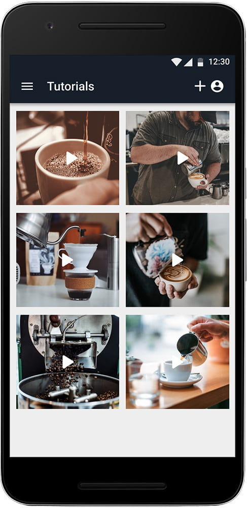
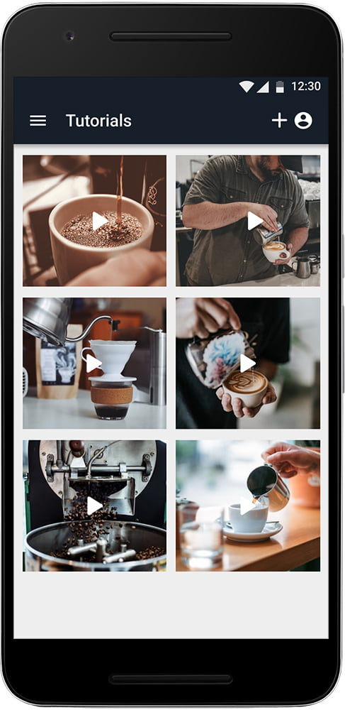

Coffee Order App
Mobile / UX / UI
intro
The target of this app is to help coffee enthusiasts discover their local cafes by providing information about location,
recipes and prices.
Coffee Order is the main UX project completed within Udacity’s UX Nanodegree Course.
Objective: Create an enjoyable coffee ordering experience for coffee enthusiasts
Role: UX Reseach and design
Duration: 1 month
Tools used: Figma, Miro, Zeplin, Adobe XD, Photoshop, Illustrator, Google Forms, Mobbin, Unbounce, LookBack
‍Final product showcase: Hi-Fi prototype and animations for mobile
problem
The target audience for the app consists mainly of young professionals; the app helps users to discover cafes that are close to their home or work, and are less known, but more authentic than the popular brands.
solution
The app aims to promote these location based coffee shops and enables users to efficiently place orders; they can select and buy
their drinks in advance.
To encourage users to buy locally, a reward-based system is implemented: with each order the user gets discounts on other
products or free drinks after a certain number of visits.
feature ideation and prioritization
I interviewed people from the target audience to determine what factors influence their decision in stopping by cafes.
I found out that most users have limited time to get ready for work in the morning and prefer to have coffee on the go
or at work. Some other decision factors were:
- lack of variety of shops in their community
- effort to discover new places.
Based on the notes taken during the interviews, I built the feature prioritization diagram:

wireframing
The mock design presents the users with a drink personalization screen where they can choose the type, size
and optional extras to complete the order.
After confirming the order and payment, the users can:
- navigate to their profile page
- see their friends’ pages
- watch tutorials on preparing different types of coffee
- use the map screen to find other cafes nearby

storyboarding
The storyboard illustrates how the users complete the task of ordering drinks in the app.
a/b testing
I carried out multiple tests of my app design and found out that:
- there was no issue with the process flow; it is similar to the usual order process in the other coffee ordering apps (e.g. Costa)
- the users have no problem navigativ the app, as the design is minimalistic and experience, intuitive
- the list of ingredients needs a better sorting system (e.g. non-dairy milk should offer multiple options, if available)
- the app is should implement a pick-up time feature

prototype iteration
Based on the user testing insights, I re-organized the sorting system for the coffee ingredients in a way that makes better sense to the users and doesn’t waste their time by trying to figure out how to complete the task. By modifying some UI elements, the app becomes easier to navigate and can reach a larger group of users. The mobile experience was improved by re-designing elements in the order screen and sorting ingredients for quicker selection.
Design - Variant A
Design - Variant B
high-fidelity prototyping
The app hasn't been rolled out yet. Potential next steps would be to develop it in Kotlin, test it within a small community and launch it on the Google App Store.

 

 

 
